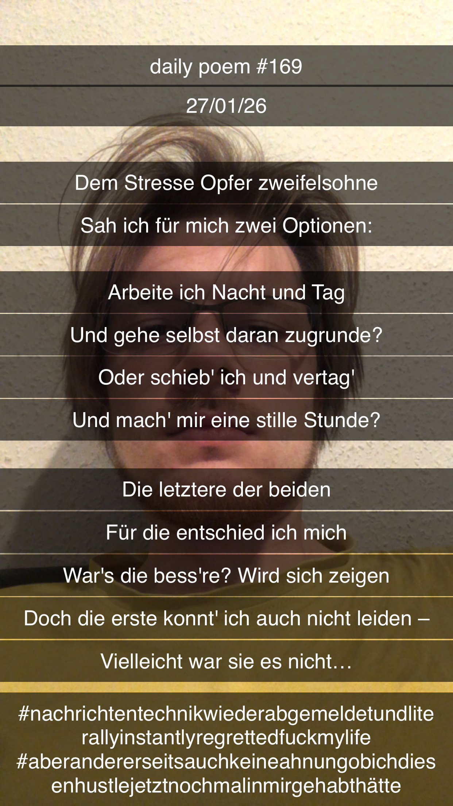

Das alte Stress-Dilemma
Dem Stresse Opfer zweifelsohne
Sah ich für mich zwei Optionen:
Arbeite ich Nacht und Tag
Und gehe selbst daran zugrunde?
Oder schieb' ich und vertag'
Und mach' mir eine stille Stunde?
Die letztere der beiden
Für die entschied ich mich
War's die bess're? Wird sich zeigen
Doch die erste konnt' ich auch nicht leiden –
Vielleicht war sie es nicht...
